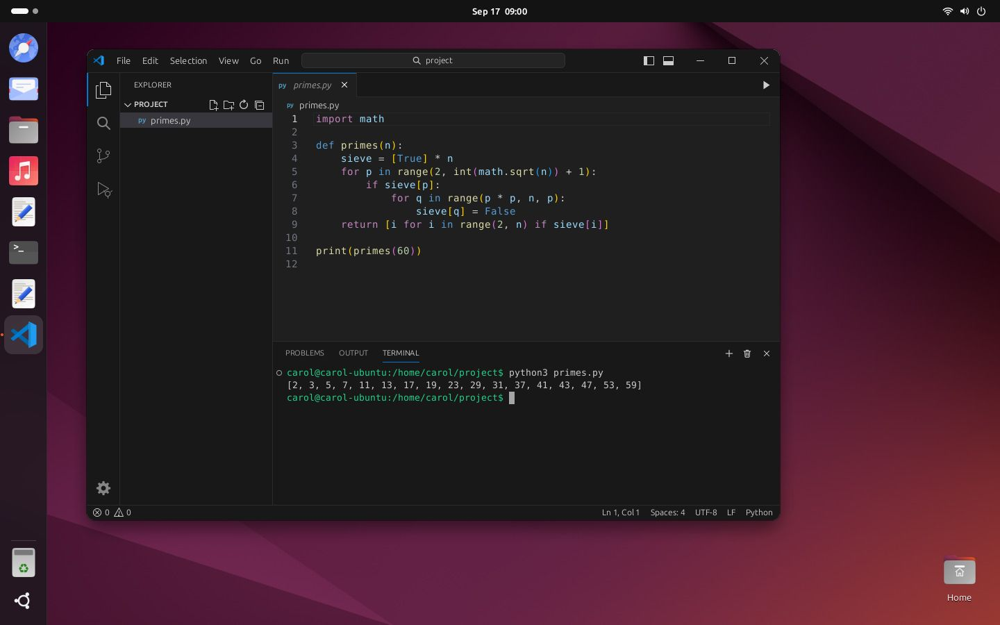
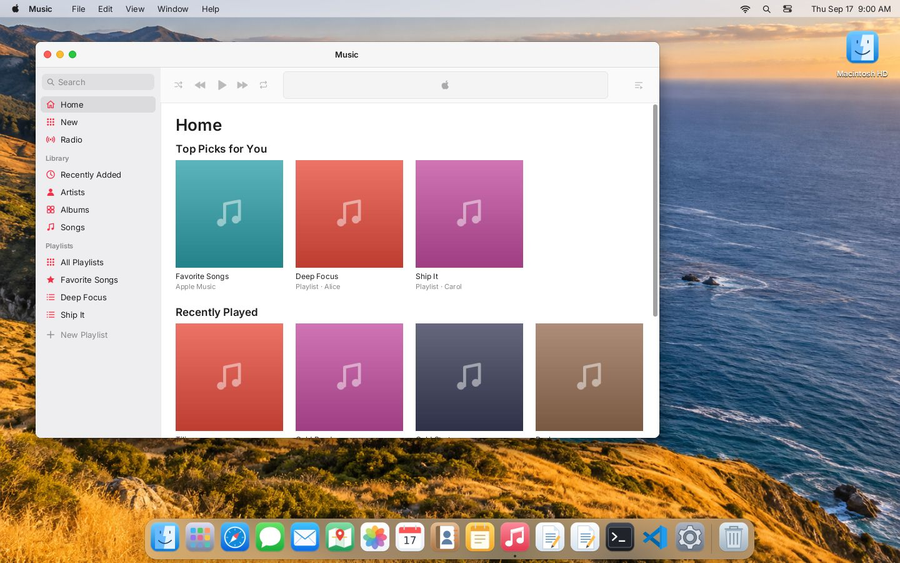
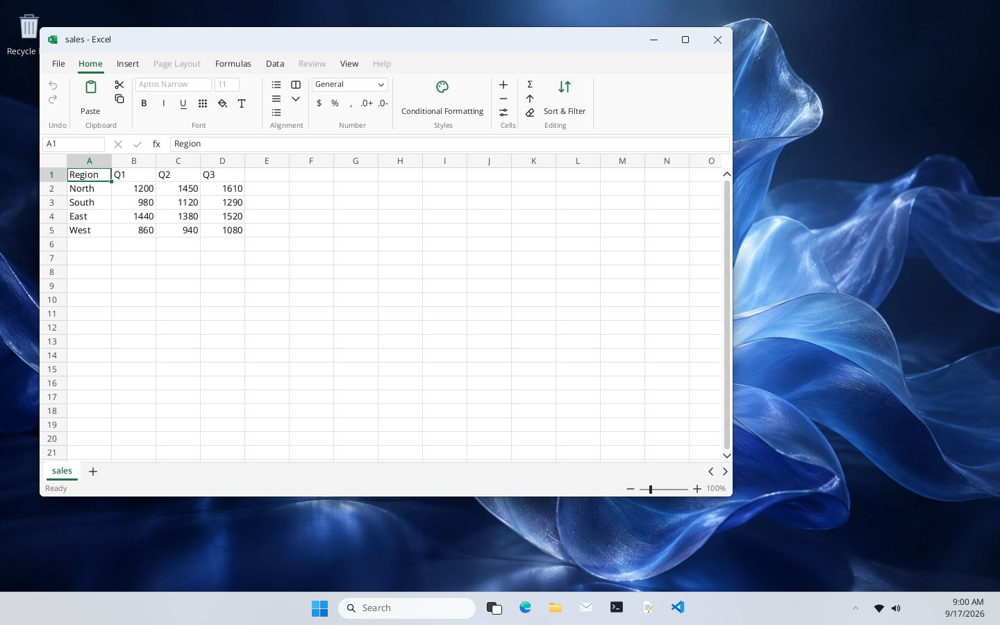
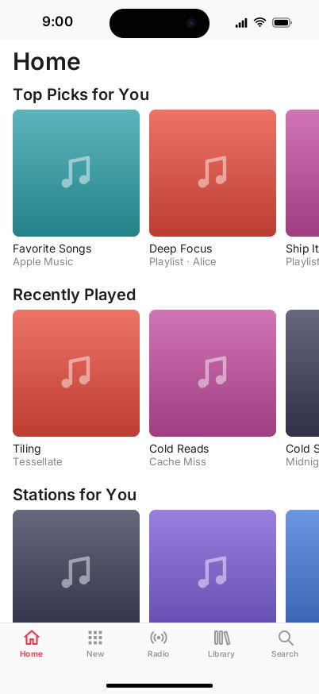
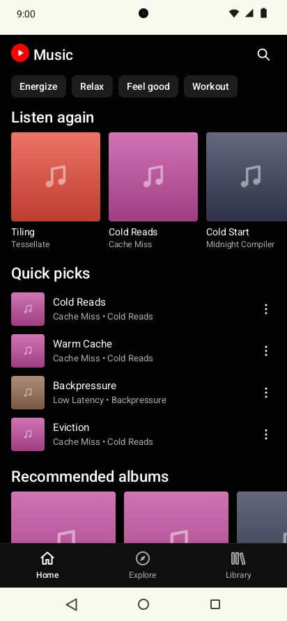

Starting the machine…
Deterministic computer-use environments
Five OS desktops, thirty real applications, a browsable internet and a shell that runs Python and Node — simulated end to end, with no host OS, no network and no flakiness. Same seed in, same bytes out, every single time.
pip install computerworld # or grab the Wasm bundle for Node and browsers
Starting the machine…
Not a mock-up, and not a video. That is the simulator's own renderer, its own VS Code, and
its own python3 printing to its own terminal — in this tab, with no server behind it.
macOS, Windows 11, Ubuntu, iOS and Android, each with its own window manager, menus, panels and gestures. Click to select, double-click to open. Every painted control does something real, or says why it cannot.
VS Code, Excel, Numbers, Calc, KiCad, FreeCAD, GIMP, Paint, Clipchamp, iMovie, Kdenlive, Apple Music, YouTube Music, Mail, Photos and more — with real documents, real file formats and real undo.
Search engines, mail, drive, video, social, news, shopping, banking and maps live on a synthetic network with its own DNS and routing. Pages reflow on a phone, links work, and nothing leaves the process.
A POSIX-ish shell with truthful exit codes, plus python3 and
node written from scratch in Rust. CPython tracebacks and Node stack
traces, byte for byte, on a virtual clock and seeded randomness. They open
sockets, spawn child processes and run threads — and stop on a breakpoint in
VS Code's debugger.
Snapshot, restore, fork. Same world, same seed, same actions gives the same state hash and the same pixels — on x86, on ARM, in Wasm. Flaky evals are a tooling problem, and this is the tooling.
Structured scenes with roles and names, focus and caret geometry, occlusion, whole pane text — or raw RGBA if your model prefers pixels. Capabilities are granted per session, so an agent sees exactly what you allow.
Same world, same tab, same simulator the Ubuntu machine above is running on. Click the menus, type in the editor, scroll the lists, swipe the phones, open something else.

Starting…

Starting…

Starting…

Starting…
from computerworld import World
world = World(definition, seed=42)
env = world.environment({"actor": "alice", "machines": ["alice-mac"],
"actions": ["pointer.v1", "keyboard.v1", "application.v1"],
"observations": ["semantic.v1"]})
env.step([{"family": "application.v1", "op": "launch",
"machine": "alice-mac", "payload": {"kind": "code"}}])
scene = env.scene(1440, 900) # roles, names, geometry — no pixels needed
frame = env.render(1440, 900) # or exact RGBA, if your model wants pixels
assert world.state_hash() == replay.state_hash()import init, { World } from "computerworld";
await init();
const world = new World(definition, 42n);
const env = world.environment({ actor: "alice", machines: ["alice-mac"],
actions: ["pointer.v1", "keyboard.v1", "application.v1"],
observations: ["semantic.v1"] });
env.step([{ family: "pointer.v1", op: "click",
machine: "alice-mac", payload: { x: 480, y: 620, width: 1440, height: 900 } }]);
const scene = env.scene(1440, 900);
const snapshot = world.snapshot(); // fork it, replay it, diff ituse computerworld::{reference_world, ActionEnvelope, EnvironmentConfig, World};
let mut world = World::new(reference_world(), 7)?;
let session = world.environment(EnvironmentConfig::desktop("alice", "alice-mac"))?;
world.step(&session, vec![ActionEnvelope::new(
"terminal.v1", "execute", "alice-mac",
serde_json::json!({ "command": "python3 primes.py" }),
)])?;
let checkpoint = world.snapshot();
let branch = world.fork(&checkpoint)?; // explore both futuresNo wall clock. No host entropy. No sockets, no subprocesses, no file system underneath. Time moves when you step it, randomness comes from your seed, and the network is part of the world. That is why a run from last week reproduces today, on another machine, in another language binding, down to the last byte of the frame.
Alpha, and moving fast. Pin a version, keep your world and seed, and tell us what breaks.